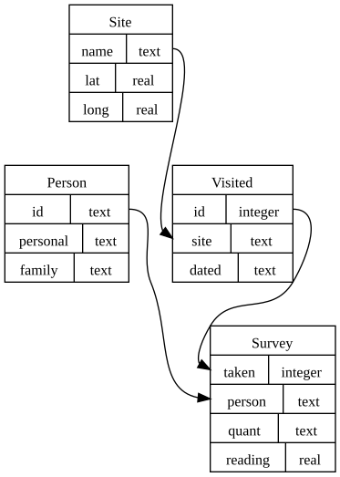

![]()
import urllib.request
import tempfile
response = urllib.request.urlopen(
"https://swcarpentry.github.io/sql-novice-survey/files/survey.db"
)
database_temp_file = tempfile.NamedTemporaryFile()
with open(database_temp_file.name, "wb") as f:
contents = response.read()
f.write(contents)
print(contents[:15])Lecture 25: Databases

Centre for Advanced Research Computing
Introduction
As the volume of data we are handling grows, it becomes harder to keep track of how it is structured and what information it contains.
We need to store the data in a way that lets us inspect and update it in a straightforward, principled manner.
A database is a collection of data that offers easier and more efficient storage and retrieval.
Learning outcomes
- Describe what a relational database is.
- Explain the benefits of using databases for storing and accessing data.
- Use structured query language to extract information from a relational database.
- Assess the advantages and disadvantages of relational and non-relational databases.
Why use databases?
Benefits of databases include:
- The ability to query the data to find entries of interest.
- Structured approaches for adding and modifying data.
- A more abstract view of the data, focusing on high-level entities and relationships, rather than low-level variables.
- Performance improvements through internal book-keeping.
- Control over who can access their contents.
Relational databases
Traditionally, the most common way of storing data like this has been in a relational database.
In a relational database, data exists in tables:
- Rows correspond to individual records or data samples.
- Columns are variables of a particular type.
The structure of each table is critical. This includes:
- the number of columns,
- the name of each column,
- the type of data in each column.
Database schemas
This structure is called the schema of the database.
Deciding on the structure of the database is very important. A good schema aims to:
- capture all the relevant information,
- avoid duplication of data as much as possible,
- capture constraints about the data, such as types,
- represent relations between different fields and tables.
Database schemas

CC-BY 4.0, Software Carpentries Databases and SQL lesson authors
Here
is
an
example
(taken
from
a
Software Carpentry tutorial
)
of
how
a
schema
can
be
depicted
graphically.
For
each
of
the
four
tables,
the
schema
lists
its
columns
and
their
types.
The
arrows
show
dependencies
between
different
tables.
For
example,
the
person
column
in
the
Survey
table
cannot
contain
arbitrary
values;
it
must
be
a
valid
person
ID.
It
must
match
the
value
of
the
id
column
for
some
row
in
the
Person
table.
This
is
a
common
type
of
constraint
that
relational
databases
enforce.
Data integrity
The database checks that all constraints and relations are satisfied at all times.
If the user tries to insert data that would violate the constraints, the database system will reject that update, ensuring the integrity of the data.
ACID properties
More broadly the ACID properties of database transactions are intended to ensure data remains valid irrespective of errors and failures:
- Atomic - each transaction is treated as a single unit which succeeds or fails completely.
- Consistent - transactions can only change database from one consistent state to another.
- Isolated - the database state is invariant to the order of execution of concurrent transactions.
- Durable - once transactions are committed they persist even in the case of system failures.
Relational database management systems
There are several relational database management systems (RDBMSs), such as MySQL, Postgresql, Oracle and SQLite.
These are software systems that allow users to define, create, maintain and control access to relational databases.1
Each RDBMS offers slightly different features but they share the same fundamental approach.
SQL
To extract information from a relational database, we can write queries in the Structured Query Language (SQL).
Common operations include:
- Selecting only certain columns of interest.
- Filtering to a subset of records based on the value of one or more fields.
- Performing aggregations (summing or counting records).
- Combining or joining data from multiple tables.
Example: reading an SQL database
To
illustrate
some
of
these
concepts,
we
will
work
with
a
small
database
of
fictional
experimental
measurements.
You
can
read
more
about
the
structure
of
the
database
in
the
tutorial
it
originates
from.
First
we
need
to
download
the
data.
In
this
case,
database
itself
is
stored
in
a
file
which
can
be
shared
like
any
other
file.
b'SQLite format 3'SQLite
The database we have downloaded is for the SQLite system.
SQLite is an open-source, lightweight and self-contained RDBMS designed as a library which can be embedded in other applications.
Many programming languages provide interfaces for working with SQLite databases and it is included by default in a variety of operating systems.
Example: connecting to a database
Python comes with built-in support for SQLite databases through the sqlite3 package.
The sqlite3.connect function can be used to create a connection to a database given a path to the database file.
Example: executing queries
Once connected, we can execute SQL queries to get results.
Help on built-in function execute:
execute(sql, parameters=<unrepresentable>, /) method of sqlite3.Connection instance
Executes an SQL statement.
The Connection.execute method returns a Cursor object that we can iterate over to get the result rows.
Selecting rows of data
The fundamental way of extracting data with SQL is a query of the form:
Example: querying database
Let’s run this query in Python and print the results:
('William', 'Dyer')
('Frank', 'Pabodie')
('Anderson', 'Lake')
('Valentina', 'Roerich')
('Frank', 'Danforth')As we iterate over results the values for each column specified in the query are returned as a tuple, with each tuple corresponding to a different row.
Filtering with WHERE clauses
Often we will want to get only a subset of the rows that satisfy one or more conditions.
We can restrict the results using an extra WHERE clause:
The conditions may be specified using (in)equality operators (=, !=, <, >, <=, >=) and additional operators such as IN, BETWEEN and LIKE.
Conditions can be logically combined using AND and OR, and negated using NOT.
Example: using a WHERE clause
In our example, we may wish to select all columns from the Survey table, returning only rows where the value for the reading column is negative.
Combining information across tables
Queries can combine information from multiple tables.
In our running example the Survey table only holds scientists’ identifiers, not their names.
Example: joining across tables
We can execute this query and print the results:
('Lake', -16.0)
('Lake', 0.05)
('Lake', 0.09)
('Lake', 0.1)
('Lake', 0.21)
('Lake', 1.46)
('Lake', 2.19)The family name of the person who took the reading for all returned results is Lake as expected.
Example: joining across tables
While the previous query works, more commonly this sort of combining of data from tables would usually be expressed using the JOIN and ON keywords
('Lake', -16.0)
('Lake', 0.05)
('Lake', 0.09)
('Lake', 0.1)
('Lake', 0.21)
('Lake', 1.46)
('Lake', 2.19)Database indices
When we run a query like this, the database system may not need to inspect every row to find the results.
Instead, it uses an internal set of indices that allow it to look up the relevant rows.
These indices are updated automatically and stored alongside the tables.
This gives increased performance, without the user having to worry about maintaining these indices or even know the details of how queries run.
Aggregating data
SQL provides several built-in functions for aggregating data across records:
min: minimum of values,max: maximum of values,avg: average (mean) of values,sum: sum of values,count: count of values.
These aggregation functions can be combined with WHERE clauses to aggregate only across values meeting one or more conditions.
Example: aggregating readings
In our running example to compute the mean salinity reading we could execute a query as follows:
(7.203333333333333,)Modifying data
Apart from extracting data, SQL can be used to:
- insert new rows into a table using
INSERT INTO <table> VALUES <record values>, - modify existing rows using
UPDATE <table and column(s)> SET <column update(s)>, - delete rows using
DELETE FROM <table>.
Inserting data into tables
For example, the query
will
- create a new row in the
Persontable, - for a person named Beatriz Torres with identifier
bta.
More complex queries
We can also combine modification with other SQL feature to build up more complex queries.
Other SQL features
SQL offers more functionality, such as:
- Basic arithmetic and computations.
- Built-in functions for working with dates and other data types (depending on the RDBMS).
- Syntax for creating tables and altering their schema.
- Syntax for specifying constraints and dependencies.
More complex operations can be completed by “combining” SQL with a programming language.
Benefits of relational databases
Relational databases were practically the standard until recently. They offer:
- A shared way of using them (the core of SQL is the same despite variations in different RDBMSs).
- Guarantees about the integrity of the data.
- Stability and a large community of experienced users.
- Decades of theoretical research and performance optimisations.
Interacting with databases
There are different ways we can connect to a relational database, read and modify its contents. These include:
- Running the RDBMS application directly and issuing SQL commands from there.
- For many programming languages, using a library to connect and run queries (like
sqlite3in the examples). - Depending on the RDBMS, it may be possible to store a copy of the database into a file and then reload it.
- Libraries like
pandasalso allow reading database tables and running queries.
Example: loading a table with pandas
For example we can use the pandas.read_sql_table function to open the Person table from our running example database.
| id | personal | family | |
|---|---|---|---|
| 0 | dyer | William | Dyer |
| 1 | pb | Frank | Pabodie |
| 2 | lake | Anderson | Lake |
| 3 | roe | Valentina | Roerich |
| 4 | danforth | Frank | Danforth |
Non-relational databases
Sometimes the rigid structure of a relational database is restrictive.
Non-relational or NoSQL databases can store data even when it does not have a consistent structure.
This flexibility is useful, for example, when our data comes in various forms, or when we are still gathering it and therefore don’t know what the best structure to use will be.
Non-relational databases
Instead of tables with fixed columns, these databases model their contents in different ways.
For example, MongoDB treats its contents as documents containing multiple fields.
The fields don’t need to be the same across documents.
This means we can store entries with different types of information in the same database without issue.
Non-relational databases
Instead of SQL, each system usually offers its own libraries for accessing a database through a programming language (for example, MongoDB has the pymongo package for Python, and similar for other languages).
Benefit: Access can be more intuitive, without needing to learn a new language.
Downside: Systems differ in how they expect users to structure and access their data.
Comparison
The two approaches are most effective in different situations:
SQL
- Emphasises data integrity but requires rigid structure.
- Structure focuses on eliminating duplication and improving performance.
- Has an established presence and set of tools.
NoSQL
- Offers flexibility but leaves checks up to the user.
- More concerned with availability & scaling, even if it means replicating data.
- Systems show more frequent innovation.
Summary
- Databases provide a principled way for storing, sharing and querying large amounts of data.
- Relational databases can be queried through SQL.
- NoSQL databases offer more flexibility at the expense of potentially fewer guarantees on integrity and consistency.